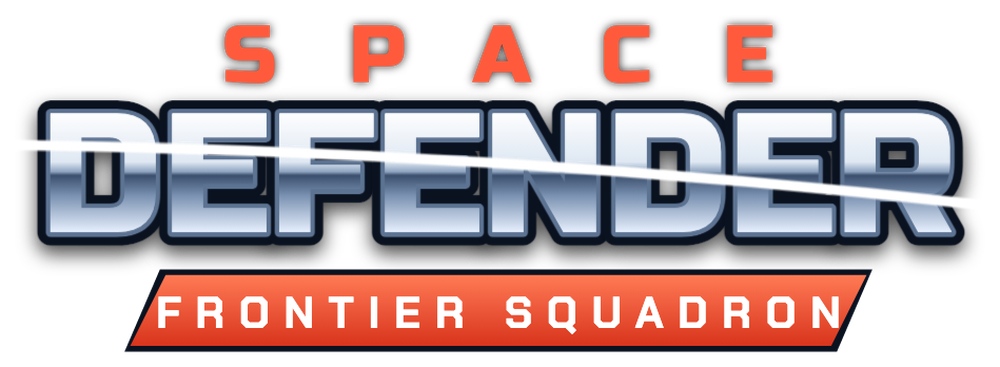
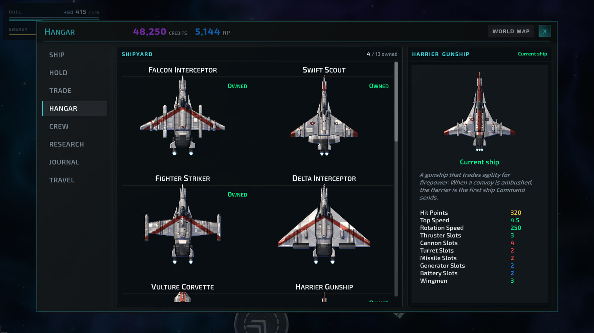

Steam · Windows · macOS
Le jeu complet sur PC et Mac
La campagne en trois actes, les ailiers, les treize types de contrats. Un seul achat, les mises à jour suivent.
9,99 € prix de base, les promotions s’affichent sur Steam

Un shooter spatial vu de dessus avec une vraie progression RPG. Remplissez des contrats dans trois galaxies, équipez votre vaisseau, recrutez jusqu’à trois ailiers, et menez la guerre jusqu’au Nexus.
Bande-annonce 1.0 — 30 s Space Defender: Frontier Squadron
Les Drones ont envahi trois galaxies, relais après relais. Les stations s’éteignent une à une. Le Commandement n’a plus qu’une réponse : vous, un vaisseau, et tous ceux que vous parviendrez à convaincre de voler à vos côtés.
Space Defender mêle combat spatial twin-stick et progression RPG. Entre deux combats, on s’arrime aux stations pour commercer, acheter des vaisseaux, lancer des recherches et recruter des pilotes. Sur le terrain, on enchaîne treize types de contrats, de l’escorte de convoi à la survie, face à des Drones qui se battent chacun à leur façon.
La campagne se déroule en trois actes et treize missions d’histoire, aux côtés de l’amiral Voss, d’Ilse Marin et d’ARIA, de la première ligne de défense d’Aquarii jusqu’à la bataille finale contre le Nexus.
Captures



Acheter le jeu
Steam · Windows · macOS
La campagne en trois actes, les ailiers, les treize types de contrats. Un seul achat, les mises à jour suivent.
9,99 € prix de base, les promotions s’affichent sur Steam
Android · iPhone · iPad
La version mobile. Gratuite à l’essai : le premier acte est jouable, puis un seul achat débloque le jeu complet.
Steam · contenu optionnel
Pour soutenir un développeur solo : le mode borne d’arcade, un manuel de vol de 44 pages à imprimer, la carte stellaire en poster A3, des fonds d’écran et les 43 morceaux de la bande originale d’Alkakrab. Aucun avantage en jeu.
4,99 € demande le jeu sur Steam
Fiche presse
Logos, key art, douze captures en 1920 × 1080 et trois GIF. Tous ces éléments peuvent être utilisés librement pour parler du jeu.
FAQ
Non. La 1.0 est le jeu complet : la campagne en trois actes, les ailiers, neuf nouveaux types de contrats, les nouvelles familles d’armes et une passe d’équilibrage entière. Les possesseurs de l’accès anticipé reçoivent la mise à jour gratuitement.
Oui, du menu au combat, avec navigation complète. Le clavier et la souris restent le contrôle de référence pour la visée.
Oui, en partie, et autant le dire clairement. J’ai travaillé avec un assistant IA pour une partie du code et pour la relecture des textes en français et en anglais.
Le game design, l’équilibrage, l’écriture et les choix créatifs sont les miens : c’est moi qui décide de ce qui entre dans le jeu et de ce qui en sort. La musique est composée par Alkakrab, un artiste humain, utilisée sous licence (Sci-Fi Music Packs), et les effets sonores viennent de ZapSplat.
Le jeu est sur Windows et macOS par Steam : un seul achat donne les deux. Une version mobile, « Space Defender: Squadron », est disponible sur Google Play et sur l'App Store, gratuite à l’essai. Rien n’est promis pour Linux aujourd’hui.
Le Discord, de préférence : j’y lis tout. C’est de là qu’est venu le système d’ailiers.